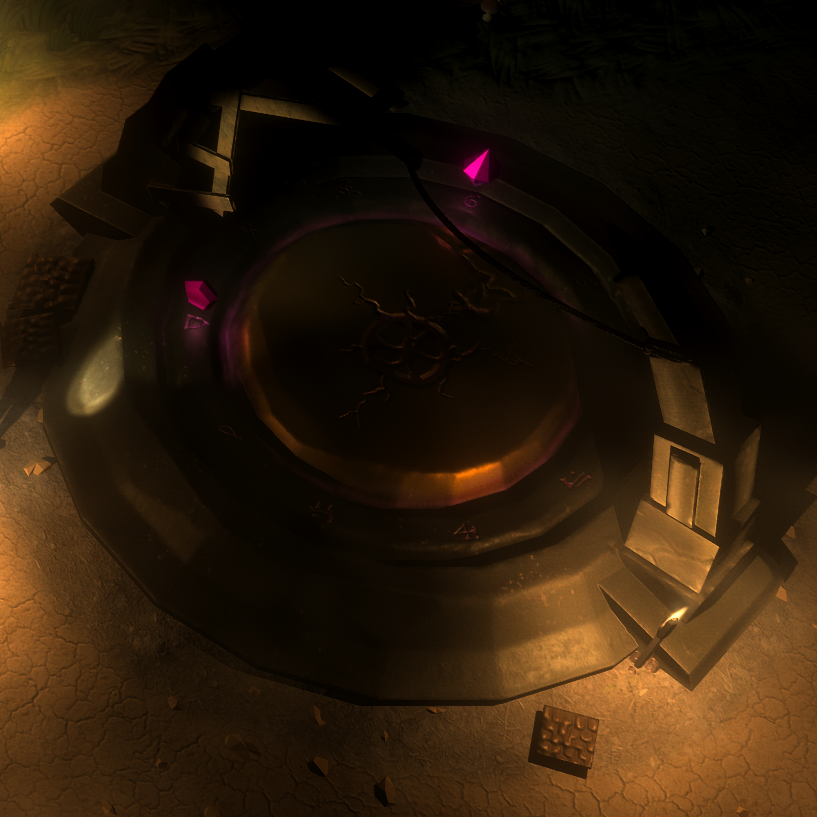

Unity horror game - Everlasting Nightmare
Posted by Dobbenberg, Wouter on 2024-08-14
During my time at university, I took a game design minor where I got the chance to create my first game using the Unity game engine. My partner and I worked together on this project, and I’m going to share some details about that game here.
The Game Concept
Our game is a third-person, top-down horror experience. The player controls a character trapped in darkness, moving around using the WASD keys. To fight the darkness, the player has a flashlight that they control with the mouse. The game takes place in what we called the "nightmare world." To escape, the player must find and collect 10 gems. Once all the gems are collected, the player can leave through a rift in the center of the map, completing the game.While searching for gems, the player is hunted by small, one-eyed monsters with tentacles. These creatures lower the player's sanity when they get too close, eventually leading to death. The flashlight can freeze these monsters temporarily, giving the player a chance to escape.
The Learning Process
This project was a huge learning experience for both of us. We had to figure out a lot of things from scratch, including:- Modeling Static Objects: We created our own models using Maya. One of the objects modeled is the alter.
- Character Creation: We designed and animated human characters, created UV maps, and made textures.
- Audio Creation: We used Reaper Studio to make our own sounds and music with synthesizers.
- FStudio Plugin: We integrated this plugin to allow for dynamic music that changes based on the player’s sanity level.
- Coding: We wrote all the game code ourselves.
- Game Design Theory: We took courses on how to develop game concepts and make them appealing to an audience.
